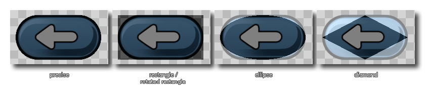
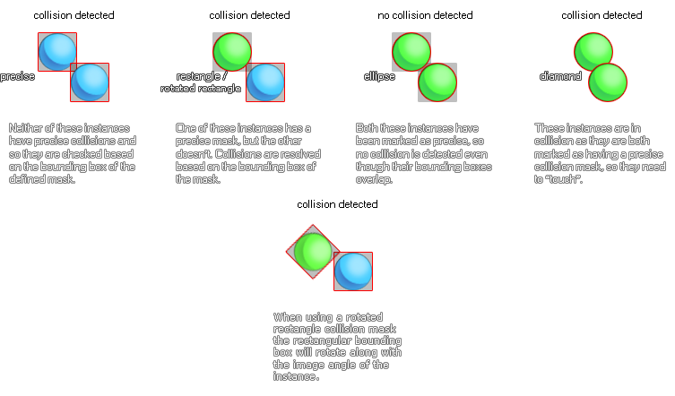

L'éditeur de sprites est l'endroit où vous définissez les propriétés générales de toute ressource de sprite que vous créez. Vous pouvez ouvrir cette fenêtre en créant un nouveau sprite (clic droit  dans le dossier des ressources de l’image-objet et sélectionnez "Créer"), en double-cliquant sur
dans le dossier des ressources de l’image-objet et sélectionnez "Créer"), en double-cliquant sur  sur un sprite existant ou par un clic droit
sur un sprite existant ou par un clic droit  une image-objet existante et en sélectionnant "Propriétés". Les parties qui composent l'éditeur Sprite sont les suivantes:
une image-objet existante et en sélectionnant "Propriétés". Les parties qui composent l'éditeur Sprite sont les suivantes:
Ici vous pouvez nommer le sprite. Le nom de l'image-objet est ce qui sera utilisé tout au long de votre projet de jeu pour identifier l'image-objet en tant que ressource. Il ne peut être qu'un caractère alphanumérique et ne peut utiliser que le symbole "_" situé sous la barre. Bien que vous puissiez utiliser des nombres dans le nom des images-objets, le nom ne peut pas commencer par un numéro, car cela en ferait un nom de ressource non valide lors de l'utilisation de GML ou DnD™.
Dans cette section, vous pouvez définir la taille de l'image en cliquant sur le bouton Taille de l'image-objet.
. Cela ouvrira la fenêtre suivante:
Vous pouvez voir ici un aperçu de l'image-objet avant et après l'application des transformations choisies. La section ci-dessous, consacrée à la définition des nouvelles propriétés de l'image-objet, est divisée en deux parties:
- Redimensionner l' image: avec cette option, vous pouvez redimensionner la zone de dessin de l'image-objet et toutes les images contenues dans l'image-objet seront étirées et redimensionnées pour s'adapter à la nouvelle taille. Vous pouvez choisir de redimensionner et de conserver le rapport de format de l'image de base. Vous pouvez également choisir de redimensionner en pixels ou en pourcentage. En fonction du type d’image avec laquelle vous travaillez, vous pouvez également activer ou non l’interpolation linéaire (en général, l’interpolation linéaire "adoucira" les pixels sur une zone, il est donc préférable de la laisser de côté pour les pixel art).
- Redimensionner le canevas: cette option redimensionnera le canevas dessiné à la nouvelle taille sans redimensionner le contenu. Vous pouvez définir le point "d'ancrage" pour le redimensionnement à l'aide des flèches directionnelles, puis définir la valeur de la taille. Il existe une option permettant de conserver les proportions lors du redimensionnement de la trame et en bas, vous pouvez choisir de définir les valeurs de redimensionnement en pixels ou en pourcentage.
Lorsque vous êtes satisfait de la nouvelle taille, vous pouvez cliquer sur Appliquer pour appliquer les modifications et fermer la fenêtre Propriétés de redimensionnement.
REMARQUE: cette option est uniquement disponible pour les images-objets bitmap et sera grisée pour les images-objets SWF ou d'animation squelette.Dans cette section, vous pouvez également ouvrir l' éditeur d'images pour dessiner sur votre image-objet ou cliquer sur le bouton " Importer " pour importer une image-objet créée précédemment. Les sprites peuvent être importés à partir des formats bitmap les plus courants ( PNG, JPG, GIF, etc...) mais GameMaker Studio 2 prend également en charge les sprites vectoriels (SWF) et les sprites d’animation squelettique (Spine). Pour plus d'informations sur ces formats, veuillez vous reporter à la section Importation de sprites non bitmap. Notez que lors de l'importation d'images-objets bitmap, vous pouvez sélectionner plusieurs fichiers image dans l'explorateur de fichiers. Chacun d'entre eux sera ajouté à la même image-objet en tant que sous-images distinctes (images).
Cette section de la fenêtre des propriétés des images- GameMaker Studio 2 explique comment GameMaker Studio 2 stocke les images qui composent votre image-objet sur des pages de texture à utiliser avec les appareils et les navigateurs. En règle générale, cela n’est pas trop important pour les plates-formes de bureau, mais lorsque vous commencez à développer pour le Web ou les mobiles, la gestion appropriée de vos ressources d’image (textures) devient très importante, car des textures mal gérées peuvent avoir des effets néfastes sur votre jeu, entraînant des problèmes de performances.
Les cases à cocher Mosaïque: Horizontal et Mosaïque: Vertical ne sont pas cochées par défaut, car vous ne souhaitez généralement pas placer les images-objets en mosaïque. Toutefois, dans certaines circonstances, vous pouvez souhaiter les placer en mosaïque, ce qui signifie que vous devez cocher ces options, en particulier si vous envisagez de redimensionner la vue ou la salle, car la mise à l'échelle peut introduire des artefacts dans les graphiques d'un jeu si la page de texture n'est pas générée. correctement.
Si votre image-objet doit être utilisée en tant que texture, vous devez cocher la case Séparer la texture et donner à l'image-objet une page de texture qui lui sera propre (notez que chaque sous-image recevra également sa propre page de texture, donc si votre sprite a 10 images, vous allez générer 10 pages de texture). Cela augmentera énormément les besoins en mémoire de texture de votre jeu et vous devrez donc faire très attention lorsque vous utiliserez cette option. Notez également qu'en général, si votre image-objet utilise cette option pour la 3D, les textures doivent avoir une puissance de 2 (c'est-à-dire> 128x128, 256x256, 512x512, etc.).
Ensuite, vous pouvez choisir le groupe de textures auquel vous souhaitez que la ressource sprite appartienne. Fondamentalement, un groupe de textures (précédemment défini dans le gestionnaire de groupes de textures ) est un élément que vous pouvez configurer pour que toutes les ressources d'image nécessaires à des salles ou à des niveaux spécifiques de votre jeu puissent être stockées ensemble. Ainsi, par exemple, vous pouvez avoir toutes vos images de niveau 1 dans un groupe de textures, toutes vos images de niveau 2 dans des autres etc... et GameMaker Studio 2 essaiera de placer toutes ces ressources groupées sur la même page de texture afin de réduire la texture. permuter pendant que votre jeu tourne sur la plate-forme cible choisie.
REMARQUE: cela n'est peut-être pas toujours nécessaire et l'augmentation des performances à partir de cette méthode dépend du fait que le périphérique cible est lié au processeur ou au GPU.
Vous pouvez en savoir plus sur les pages de texture ici.L'option suivante consiste à activer l' alpha pré-multiplié pour les images de sprite. Lorsque cette option est activée, l'alpha de toutes les sous-images de l'image-objet est pré-multiplié. Normalement, il s'agit uniquement d'attirer les images-objets sur des surfaces ou de créer des effets spéciaux spécifiques. Pour une utilisation normale de sprite, vous ne devriez pas voir de différence notable entre le sprite normal et le pré-multiplié.
Enfin, nous avons le filtrage de bord. Cette option est spécialement conçue pour l’activation de l’interpolation linéaire dans votre jeu et la visualisation de "halos" de couleurs autour de vos sprites. Ceci est dû au fait que le matériel interpole en même temps à partir de plusieurs texels sources sur la page de texture et peut être particulièrement évident lorsque vous redimensionnez des jeux. Activer ceci filtrera les pixels de bord pour prendre la couleur du pixel de sprite alpha complet le plus proche et ainsi fusionner les pixels interpolés sans le halo précédemment présent.
Toutes les images-objets ont un masque de collision qui correspond à la zone de l'image-objet qui sera utilisée pour détecter les collisions lorsque l'image-objet est assignée à une instance. Vous pouvez d’abord définir le mode du masque de collision, qui peut être l’un des suivants:
Outre le mode masque de collision, il existe également différents types de masque de collision que vous pouvez choisir dans le menu déroulant:
- Automatique: GameMaker Studio 2 calculera automatiquement le masque de collision en fonction des valeurs alpha du sprite (cela dépend du paramètre Tolérance expliqué ci-dessous).
- Image complète: le masque sera calculé avec des limites identiques à celles de gauche, de droite, du haut et du bas de l’image-objet.
- Manuel: sélectionnez cette option pour définir les limites du masque de collision à l'aide des valeurs d'entrée gauche, droite, haut et bas.
L'image suivante illustre les différentes options de masque:
- Rectangle: Un masque de collision rectangulaire simple. C'est le plus rapide à résoudre lorsqu'il est utilisé dans votre projet.
- Rectangle en rotation: C’est un masque de collision rectangulaire simple qui tournera avec le image_angle valeur de l'instance avec le sprite assigné. Cela est plus lent à résoudre que le masque de collision rectangulaire normal, mais plus rapide qu'un masque de collision précis.
- Ellipse: crée un masque de collision elliptique. C'est plus lent à résoudre.
- Diamond: Crée un masque de collision "diamant". Cela est plus lent à résoudre et génère plus de temps système.
- Précis: Cela crée un masque de collision précis basé sur le contour de l'image-objet. Si l'image-objet a plusieurs sous-images, alors ce sera un composite des bords de toutes les sous-images placées les unes sur les autres. Notez que le masque précis sera clipsé dans le cadre de sélection si Mode est défini sur Manuel et que vous modifiez les valeurs par défaut. Ceci est très lent et génère beaucoup de temps système.
- Précis (par image): Ceci crée un masque de collision précis image par image (le masque changera pour se conformer au contour de chaque image différente). Notez que le masque précis sera clipsé dans le cadre de sélection si Mode est défini sur Manuel et que vous modifiez les valeurs par défaut. Il s'agit de loin du type de masque de collision le plus lent à résoudre et doit être évité, sauf dans des cas très spécifiques et peu fréquents. cas.

Les options de vérification des collisions sont très importantes pour votre jeu, car elles influenceront directement la manière dont vos objets interagissent et fonctionnent correctement, les mauvais réglages ayant même un impact négatif sur les performances globales. Pourquoi donc? Eh bien, chaque fois que deux instances se rencontrent et que les deux instances ont un masque valide, un événement de collision est généré en vérifiant le chevauchement du masque, qui peut être précis ou non, et adapté à l’index de l’image. Ci-dessous une image pour illustrer ceci:

En dessous, vous avez le curseur de tolérance alpha, qui indique la tolérance pour la création du masque par rapport à la transparence des pixels des images-objets - avec une tolérance plus élevée, les pixels partiellement transparents sont laissés à l'extérieur du masque, tandis qu'avec une tolérance inférieure, le masque prendra en compte ces pixels. Cela influence à la fois le cadre de sélection (s'il n'est pas défini sur manuel) et le masque pour une vérification précise des collisions.
Enfin, vous pouvez définir les limites pour la boîte englobante du masque. La boîte englobante est le nom donné à la zone rectangulaire dans laquelle le masque de l'image-objet est inséré. Seuls les pixels de cette boîte englobante sont utilisés pour le masque et seront impliqués dans la vérification des collisions. Par défaut, ils sont automatiquement calculés, en tenant compte de la tolérance alpha. Compte. Si vous avez coché "précis (par image)", cela sera également séparé pour chaque sous-image. Lorsque vous le configurez vous-même, vous pouvez entrer les valeurs dans les cases correspondant à gauche, à droite, en haut et en bas, ou vous pouvez cliquer sur
dans la vue des images-objets et faites glisser pour le "dessiner" sur celle-ci. Notez que lorsque vous "dessinez" le cadre de sélection, le masque est automatiquement généré pour tenir dans les valeurs finales.
Il est à noter que si vous accédez à la fenêtre d'aperçu, vous pouvez régler le masque de collision à l'aide des "poignées" situées dans chaque coin. En cliquant dessus et en les faisant glisser, le masque de collision sera ajusté de la même manière que le ferait la saisie de valeurs pour le cadre de sélection.
La barre supérieure de l'éditeur de sprite contient les propriétés d'origine du sprite et les commandes de zoom de la fenêtre d'aperçu. Ici, vous pouvez voir la largeur et la hauteur de l’image-objet, ainsi que définir l’ origine. C'est le point dans l'image-objet qui correspond à sa position dans la pièce, c'est-à-dire que lorsque vous créez une instance à une position x / y particulière, l'origine de l'image-objet est placée à cet endroit. Par défaut, il s’agit du coin supérieur gauche de l’image-objet, mais il est souvent plus pratique d’utiliser le centre ou d’utiliser une autre position afin de pouvoir cliquer sur
En haut à droite se trouvent les commandes de zoom, dans lesquelles vous pouvez agrandir ou réduire l'aperçu de l'image selon vos besoins. Clique le
icône pour rendre l'image 1: 1 avec les pixels réels.
La fenêtre d'aperçu de l'image-objet affiche l'image-objet telle qu'elle sera dans le jeu et peut être agrandie ou réduite en utilisant la molette de la souris.
, et parcouru en utilisant le
+
Cette partie de l'éditeur de sprite affiche chacune des différentes images composant un même sprite. Vous pouvez cliquer
dans le coin supérieur, et vous pouvez cliquer dessus pour supprimer le cadre de l'image-objet. Vous pouvez aussi cliquer
/
+
Les commandes d'images permettent de lire l'animation des images dans la fenêtre d'aperçu. Le bouton de lecture démarre / arrête l'animation et le bouton Boucle.
utilisé pour définir si les boucles de sprite (retourne à l'image 1 lorsque la dernière image est atteinte) ou ping-pong
(recule dans les images lorsque la dernière image est atteinte) et vous pouvez définir la vitesse à laquelle elles doivent être lues à partir de la zone de saisie de gauche. La vitesse des images peut être basée sur "Images par seconde" ou "Images par image". Le nombre total de cadres disponibles est indiqué à droite avec le cadre actuel qui a été sélectionné. Vous pouvez également sélectionner plusieurs cadres et sélectionner des cadres à l'aide de